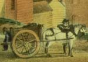
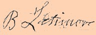

|
by Stefan Bielinski Benjamin Lattimore was an outstanding member of the early nineteenth century Afro Albanian community. Businessman, property owner, and a leader among his people, his life is a textbook example of an emerging African American middle class in the years following the American Revolution. From papers submitted more than sixty years later, we learn that he was born in Weathersfield, Connecticut in 1761. At this point, we have not identified his parents. In another document, Lattimore stated that he had been "born a free man." At the outbreak of the War for Independence, Benjamin was living in the town of New Marbury in Ulster County. In September 1776, he enlisted the Third New York New Regiment of the Continental army. A few days later, his company was sent to New York City where he took part in the losing battle for Manhattan. In 1777, he was on duty at Fort Montgomery and was captured when the British stormed the fort. Taken to New York City, he was made a servant of British officers. While on a trip into Westchester County, he was captured by the Americans and sent home. In 1779, Lattimore sailed with his regiment upriver to Claverack. Blocked by ice, they marched to Albany where they remained for almost two weeks. At that time, he had a glimpse of the community that later would become his home. Marching overland to Schoharie and out the Mohawk Valley, Lattimore was a part of the American offensive to punish the Iroquois for raiding frontier settlements the year before. That summer, he went down Otsego Lake, the Susquehanna River, and then marched all the way to within "hearing the enemy's guns" at Niagara. Lattimore's outfit then returned - destroying a number of Indian settlements and taking part in the Battle of Newtown along the way. After the war, Benjamin Lattimore settled in Poughkeepsie. But, by the late 1790s, he had relocated to Albany. In 1799, he was identified as "a negro man" and was baptized into the Albany Presbyterian Church. In 1804, the Presbyterian Church sanctioned his marriage to Dina, the "servant maid of Dr. Mancius." His son, Benjamin Jr., had been born eleven years earlier. The marriage of Benjamin Sr. and Dina produced a number of children. Perhaps he was one of the adult men included in the first ward household of Thomas Lattimore on the Federal Census of 1800. In 1798, Benjamin Lattimore purchased a lot on Plain Steet in the first ward. His home at 9 Plain Street was an Albany landmark for the next forty years. In 1803, he extended his holdings through to Hudson Street. In 1811, he purchased another lot above Washington (South Pearl) Street from the estate of General Philip Schuyler. Benjamin Lattimore earned his living as a cartman. Licensed to haul cargoes throughout the city, the cartman was charged with providing courteous and consistent service and was responsible for removing trash and garbage from city streets. Lattimore held the cartman's badge almost until his death. His son, Benjamin Jr., also was a cartman. During the early 1800s, Benjamin Lattimore was a pillar of an emerging African American community. He was a founder and trustee of the first Black school in Albany, the Albany African Methodist Episcopal Church, and the Albany African Temperance Society. By the 1820s, Benjamin Jr. had succeeded him in these enterprises as well. In 1820, his legal status may have been called into question. In April, he appeared before the Albany Court of Common Pleas. He deposed that he was 59 years old and had lived in Albany for 26 years. He was described as a six-foot tall mulatto. Attorney Gerrit Denniston testified that he had known Lattimore for a number of years and that he was "a free man [of] irreproachable character for integrity and uprightness." Judge Estes Howe then declared Benjamin Lattimore to be a free man. In 1834, Lattimore applied for a pension as a soldier in the Revolutionary army.  His carefully documented and detailed application with supporting documents is on file at the National Archives. For meritorious service, he was allowed a pension of $80 a year and awarded an arrears payment of $240. Benjamin Lattimore made his will in 1837. He stated that he was a resident of the city of Albany, "weak in body, but sound of mind." No wife was named but he devised his estate to his three living children. Benjamin Lattimore died in April 1838 at age 78. Two days later he was buried in the African Methodist Episcopal Church cemetery plot. His newspaper death notice stated that he was "a soldier in the American Revolution."
A cartman on upper State Street about 1800. Detail from a watercolor by James Eights. Print copy in the Graphics Archive of the Colonial Albany Project. This notion of identifying property and business owners as "Middle Class" is considered more fully in the published article: "The Jacksons, Lattimores, and Schuylers." On the census of 1800, Thomas Lattimore's household was configured in terms of free, white members (no slaves or free people of color). But two men were listed as between 26 and 45 years old. Perhaps, one was the thirty-nine-year-old Benjamin! The first schoolhouse was built on Lattimore's property in the South End. See Marian I. Hughes, Refusing Ignorance: The Struggle to Educate Black Children in Albany, New York, 1816-1873 (Albany: Mt. Ida Press, 1998), for Lattimore's role in establishing the "Albany School for Educating People of Color." By 1866, his remains had been relocated to the Albany Rural Cemetery. However, his stone is now missing from the old AME plot.
first posted: 6/22/01 |